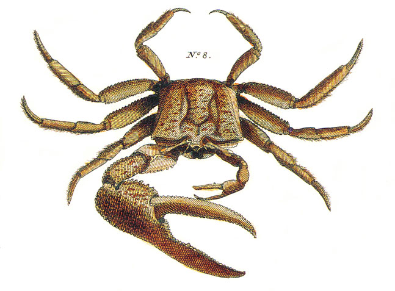
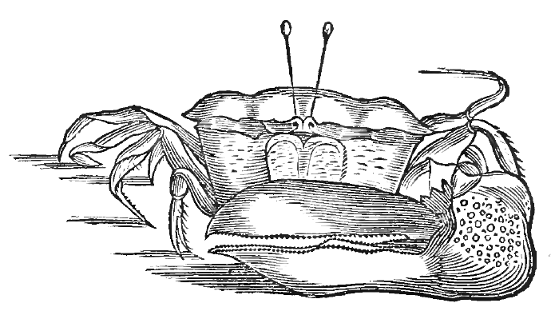
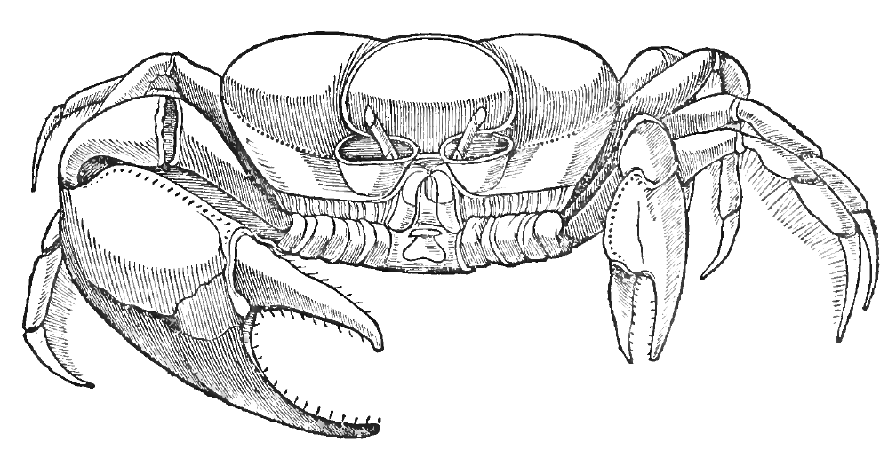
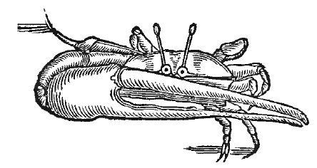

The following information is an expansion and update of that found in:
Rosenberg, M.S. 2001. The systematics and taxonomy of fiddler crabs: A phylogeny of the genus Uca.Journal of Crustacean Biology 21(3):839-869.
Additional references for updated information will be detailed below.
A Note on Classification
Shih et al. (2016) published a paper which uses a phylogenetic tree showing ghost crabs as a subgroup of fiddler crabs to justify splitting fiddler crabs into eleven different genera (essentially, raising the subgenera listed below to genera, except for Australuca which they find to be a subset of Tubuca). While one can argue whether differences among the subgroups warrant being considered genera or subgenera, I do not believe the phylogenetic tree which they use to justify this change is correct and for now am sticking with the more traditional approach of keeping all fiddler crabs within a single genus on this website. I will update this site to match their classification if additional data and future analyses continue to support their result.
The earliest description of the type species of Uca is from a drawing in Seba (1758), which he called Cancer uka una, Brasiliensibus (shown below).

A number of authors subsequently used this same picture as a basis for naming the species (Manning & Holthuis 1981). Cancer vocans major Herbst, 1782; Ocypode heterochelos Lamarck, 1801; Cancer uka Shaw and Nodder, 1802; and Uca una Leach, 1814, are all objective synonyms, because they are all based on the picture and description from Seba. Because of this, the official type specimen of the genus Uca is Cancer vocans major. The earliest description of this species based on actual specimens and not on Seba's drawing was Gelasimus platydactylus Milne-Edwards, 1837.
As an aside, Seba's name, Cancer uka una comes from the nomenclature of Marcgrave (1648), who mispelled “uça una” as “uca una”. Not only did Seba copy the mispelling, but he applied it to the fiddler crab instead of the mangrove crab (which is today called Ucides) to which Marcgrave applied the name (see below). Latreille's (1817) proposal of the generic name Gelasimus for fiddler crabs was so that Uca could be applied to mangrove crabs; as this was an invalid proposal, Uca is retained for fiddlers, despite being due to a pair of errors (Tavares 1993).

Oldest known drawing of a fiddler crab (Marcgrave 1648). He labeled it “Maracoani”, and it represents the namesake of the species Uca maracoani.

The drawing actually labeled “Uca Una” by Marcgrave (1648) is not a fiddler crab. Today this species is known as the mangrove crab Ucides cordatus.

The other fiddler crab drawing found in Marcgrave (1648), labeled “Ciecie Ete” (he also refers to a very similar species called “Ciecie Panema”). This figure is believed to most likely represent Uca thayeri.
For about 60 years, the genus was known as Gelasimus, until Rathbun (1897) showed that the abandonment of the older name Uca did not conform to zoological naming conventions. The type species of Uca was known as both Uca heterochelos and U. platydactylus, until Rathbun (1918) suggested the adoption of U. heterochelos as the valid name. Almost 50 years later, Holthuis (1962) pointed out that U. heterochelos was an objective junior synonym of U. major, thus the type species has been referred to as U. major ever since.
However, Bott (1973) discovered that there has been a universal misinterpretation of the type species; the species pictured by Seba is not the American species commonly referred to as U. major, but rather the West African/Portuguese species called U. tangeri (Eydoux, 1835). Correcting this error would have caused a somewhat painful change of names (Holthuis 1979; Manning & Holthuis 1981). The type species would still be called U. major, but would refer to the West African/European species rather than the American one; the American species, which has been called U. major since 1962, would be called U. platydactylus, a name not used since 1918.
To deal with this dilemma, the Society of Zoological Nomenclature officially designated the holotype of Gelasimus platydactylus as a neotype of Cancer vocans major (Holthuis 1979; ICZN 1983). The result of this decision is that we retain the names U. major for the American species and U. tangeri for the West African/European species. It also means that although U. tangeri is technically the species upon which the genus is named, U. major (Cancer vocans major) is still the official type species of the genus Uca.
Subgenera
There have been two major proposals for splitting up the genus, one by Bott (1973) and the other by Crane (1975). Neither is based on a numerical phylogeny. Crane's descriptions are very complete. Bott's descriptions are poor, but have priority. For a long time, scientists actively ignored both subdivisions and when there was a reference in the literature, it almost always used Crane's names and not Bott's. Bott also split the genus into multiple genera rather than subgenera, an unnecessary complication in most researcher's minds.
This subgenus is largely equivalent to a combination of Crane's Minuca and Boboruca. I have also included U. pugilator and U. panacea, which Crane placed with the Leptuca.
This subgenus is largely equivalent to Crane's Celuca, without any of the Indo-West Pacific species. This subgenus is certainly paraphyletic and quite possibly polyphyletic. It is essentially the catch-all group for any broad-fronted American species which is not part of the Minuca.
This subgenus is equivalent to Crane's Thalassuca. The exact status of U. formosensis is somewhat questionable. It may belong here, to the Tubuca, or be in a new subgenus entirely. See Shih et al. (1999) and Rosenberg (2001) for more information.
This subgenus is essentially unchanged from Crane's original description, except for the addition of a few species described after the original designation.
For an overview of all Uca species, the best reference is Crane (1975); any earlier major work would be overridden by Crane's descriptions. For the most part, the taxa recognized by Crane are still accepted today. A number of new species have been described since the publication of her monograph, a few species has been discovered to be invalid, and two of her new species were previously described by Bott (1973); as with the subgenera, his names have priority and take precedence. These changes are summarized below.
Changes to the species level taxonomy of the genus Uca since Crane (1975)